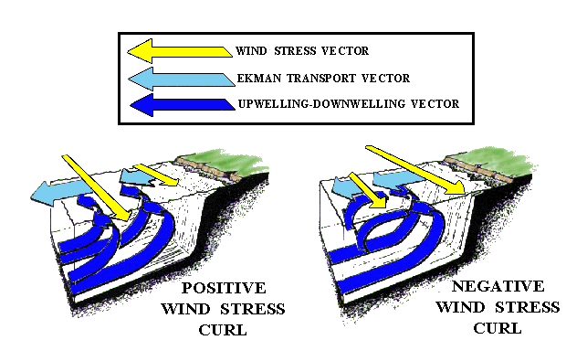

Traditional Bakun calculation at 15 positions along the west coast of North America
Upwelling Indices
Six-Hourly Upwelling Indices (1967-present)
Header Information Readme file
= [{lat : 60 , lon : 149 }, {lat : 60 , lon : 146 }, {lat : 57 , lon : 137 }, {lat : 54 , lon : 134 }, {lat : 51 , lon : 131 }, {lat : 48 , lon : 125 }, {lat : 45 , lon : 125 }, {lat : 42 , lon : 125 }, {lat : 39 , lon : 125 }, {lat : 36 , lon : 122 }, {lat : 33 , lon : 119 }, {lat : 30 , lon : 119 }, {lat : 27 , lon : 116 }, {lat : 24 , lon : 113 }, {lat : 21 , lon : 107 }]= [{name : "upwell_" , title : "Upwelling Index" }, {name : "wind_" , title : "Geostrophic Wind" }, {name : "stress_" , title : "Wind Stress" }, {name : "slp_" , title : "Sea Level Pressure" }]= new Map (uilocations. map (loc => {const label = ` ${ loc. lat } N ${ loc. lon } W` ; const fileName = `upwell ${ loc. lat } N ${ loc. lon } W` ; return [label, fileName]; // Render the dropdown menu = Inputs. select (dropdownMap, { label : "Location:" , width : 140 })= "https://oceanwatch.pfeg.noaa.gov/products/PFELData/upwell/6_hourly/" = baseUrl + selectedFile= [... dropdownMap. entries ()]. find (([label, file]) => file === selectedFile)[0 ]// 5. Render the HTML download link html `<a href=" ${ downloadUrl} " class="btn btn-primary" target="_blank"> Download </a><br>6-hourly upwelling index at ${ currentLabel} `
Daily Upwelling Indices (1967-present)
= Inputs. select (. map ((loc, idx) => idx), label : "Location:" , width : 140 , format : idx => ` ${ uilocations[idx]. lat } N ${ uilocations[idx]. lon } W` = uilocations[selectedIndex] || uilocations[0 ]; = ` ${ chosenLoc. lat } N ${ chosenLoc. lon } W` ; // 4. File and URL layout = Number (` ${ selectedIndex ?? 0 } ` )+ 1 ; = String (indx). padStart (2 , '0' ); = "p" + indx00 + "dayac.all" = "https://oceanwatch.pfeg.noaa.gov/products/PFELData/upwell/daily/" = baseUrl2 + fileName2html `<a href=" ${ downloadUrl2} " target="_blank" class="btn btn-primary"> Download</a><br>Selected: Daily Upwelling index at ${ currentLabel2} `
Monthly Upwelling Indices and Anomalies (1946-present)
Upwelling Index For All 15 Positions Anomalies For All 15 Positions
function getfiledate (d) {var y = String (d. getFullYear ()). padStart (4 , '0' ); var m = String (d. getMonth () + 1 ). padStart (2 , '0' ); return y. substr (2 ) + m; // Correct OJS block statement syntax = {let d = new Date (); . setDate (1 ); . setDate (0 ); const thisyrmon = getfiledate (d); const thisyrmondate = (d. getMonth () + 1 ) + "/" + d. getFullYear (); let d1 = new Date (); . setDate (1 ); . setMonth (d1. getMonth () - 1 ); . setDate (0 ); const lastyrmon = getfiledate (d1); const lastyrmondate = (d1. getMonth () + 1 ) + "/" + d1. getFullYear (); return { thisyrmon, thisyrmondate, lastyrmon, lastyrmondate }; html ` <a href="https://oceanwatch.pfeg.noaa.gov/products/PFELData/upwell/monthly/table. ${ links. thisyrmon } " target="_blank">Most recent month ( ${ links. thisyrmondate } )</a><br> <a href="https://oceanwatch.pfeg.noaa.gov/products/PFELData/upwell/monthly/table. ${ links. lastyrmon } " target="_blank">Previous recent month ( ${ links. lastyrmondate } )</a>`
Derived Winds and Ocean Transports
The files available in the menus below each contain:
surface atmospheric pressure-
northward component of surface wind-
eastward component of surface wind-
northward wind stress-
eastward wind stress-
wind stress curl-
cube of wind speed-
northward component of Ekman transport-
eastward component of Ekman transport-
offshore component of Ekman transport-
direction of offshore component of Ekman transport-
vertical velocity into the Ekman layer
Sverdrup transport

Six-Hourly Derived Winds and Ocean Transports (1967-1999)
= new Map (uilocations. map (loc => {const label = ` ${ loc. lat } N ${ loc. lon } W` ; const fileName = ` ${ loc. lat } n ${ loc. lon } w_67to99.amk` ; return [label, fileName]; // Render the dropdown menu = Inputs. select (dropdownMap3, { label : "Location:" , width : 140 })= "https://oceanwatch.pfeg.noaa.gov/products/PFELData/arrowmark_indices/" = baseUrl3 + selectedFile3= [... dropdownMap3. entries ()]. find (([label, file]) => file === selectedFile3)[0 ]// 5. Render the HTML download link html `<a href=" ${ downloadUrl3} " class="btn btn-primary" target="_blank"> Download </a><br>6-hourly derived winds and ocean transports at ${ currentLabel3} `
Six-Hourly Derived Winds and Ocean Transports (January 2000-present)
= new Map (uilocations. map (loc => {const label = ` ${ loc. lat } N ${ loc. lon } W` ; const fileName = ` ${ loc. lat } _ ${ loc. lon } _6hr.2000` ; return [label, fileName]; // Render the dropdown menu = Inputs. select (dropdownMap4, { label : "Location:" , width : 140 })= "https://oceanwatch.pfeg.noaa.gov/products/PFELData/arrowmark_indices/" = baseUrl4 + selectedFile4= [... dropdownMap4. entries ()]. find (([label, file]) => file === selectedFile4)[0 ]// 5. Render the HTML download link html `<a href=" ${ downloadUrl4} " class="btn btn-primary" target="_blank"> Download </a><br>6-hourly derived winds and ocean transports at ${ currentLabel4} `
1-degree Bakun Calculation at 15 positions along the west coast of North America
Near Real Time (6-hrly, 1st day of the current month to 0600 Pacific Time of the current day, updated daily)
= new Map (uilocations. map (loc => {const label = ` ${ loc. lat } N ${ loc. lon } W` ; const fileName = ` ${ loc. lon } W_ ${ loc. lat } N` ; return [label, fileName]; = new Map (products. map (prod => {const label = ` ${ prod. title } ` ; const fileName = ` ${ prod. name } ` ; return [label, fileName]; // Render the dropdown menu = Inputs. select (dropdownMap5, { width : 100 })html `<br>` = Inputs. select (dropdownMap6, { width : 100 })= "https://oceanwatch.pfeg.noaa.gov/products/current_gifs/" = baseUrl5 + selectedFile6 + selectedFile5= [... dropdownMap5. entries ()]. find (([label, file]) => file === selectedFile5)[0 ]= [... dropdownMap6. entries ()]. find (([label, file]) => file === selectedFile6)[0 ]// Render the HTML download links html `<span style="margin-right:10px;"><a href=" ${ downloadUrl5} .gif" class="btn btn-primary" target="_blank"> View Plot </a></span><span><a href=" ${ downloadUrl5} .txt" class="btn btn-primary" target="_blank"> Text Download </a><span><br> ${ currentLabel6} at ${ currentLabel5} `
Choose a location and product:
Get a plot or text download:
6-hourly 1-deg global data
Monthly 1-deg global data
Monthly 1-degree data
Including the following
Sea Level Pressure
Geostrophic Winds
Wind Stress calculated from Geostrophic Wind
Wind Stress Curl calculated from Geostrophic Wind
Ekman Transport
Bakun Calculation at other Eastern Boundary Current Locations
See the “Global Upwelling Index” section under “Bakun Index” to calculate Upwelling Index at other locations from Elkman Transport (Northern Hemisphere: 1967 - present, Southern Hemisphere: 1981 - present)
CUTI and BEUTI
CUTI and BEUTI are currently being updated approximately monthly. In the near future they will be automatically updated daily. For questions about CUTI/BEUTI contact Michael.Jacox@noaa.gov
When using CUTI or BEUTI, please cite Jacox et al. (2018 )
CUTI [csv] [NetCDF] [csv] [NetCDF]
BEUTI [csv] [NetCDF] [csv] [NetCDF]
References
Jacox, M. G., C. A. Edwards, E. L. Hazen, and S. J. Bograd. 2018.
“(2018) Coastal Upwelling Revisited: Ekman, Bakun, and Improved Upwelling Indices for the u.s. West Coast.” Journal of Geophysical Research , ahead of print.
https://doi.org/10.1029/2018JC014187 .